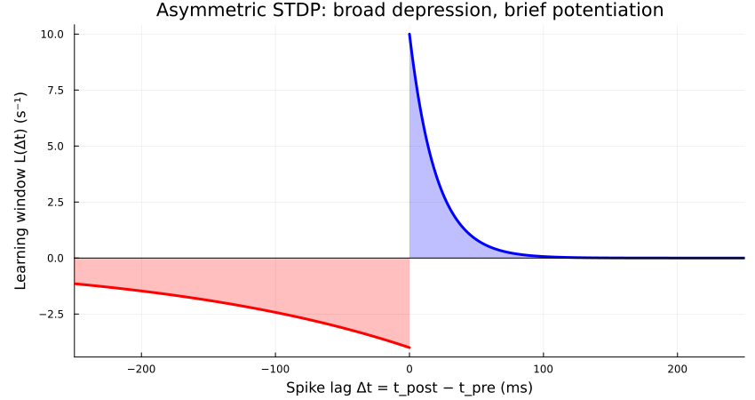
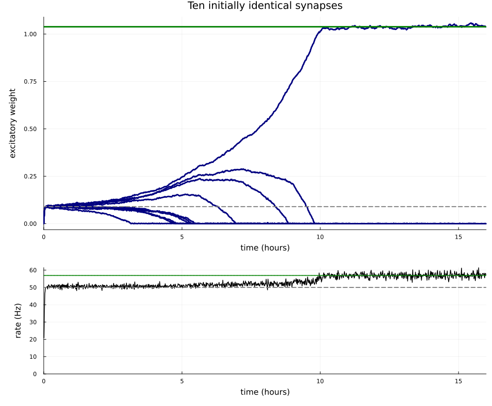
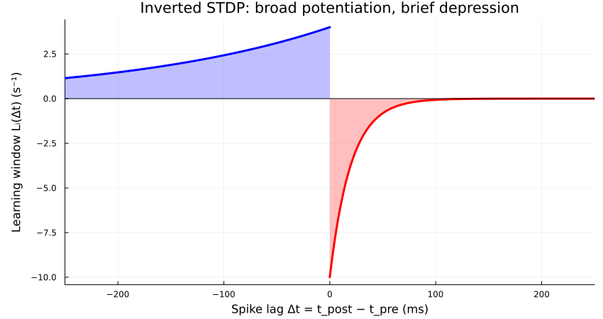
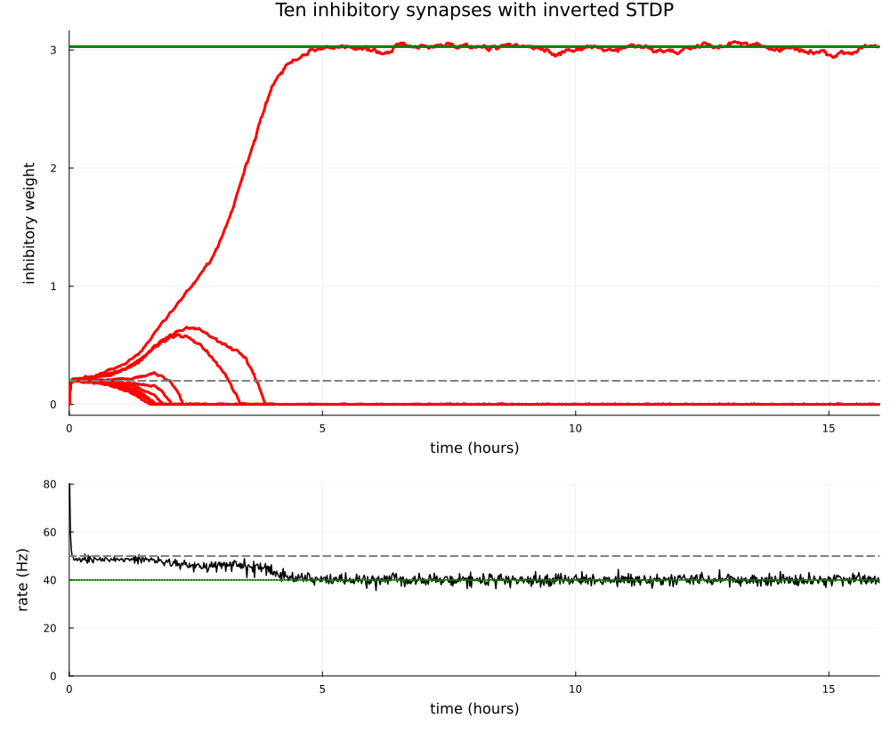
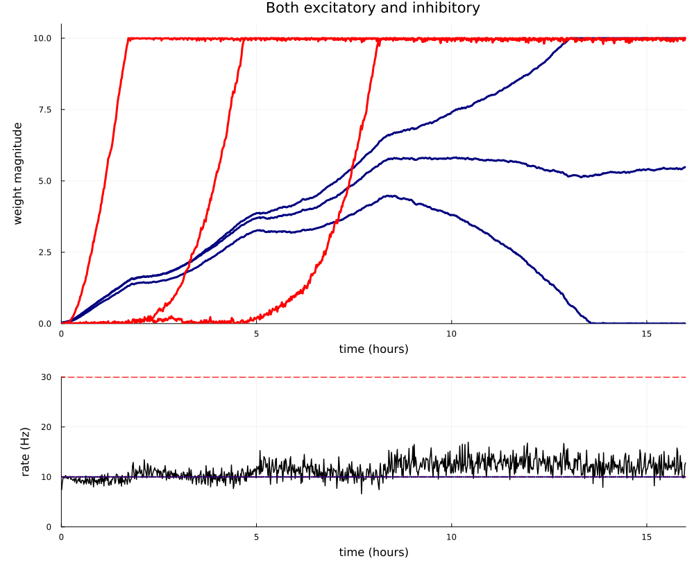
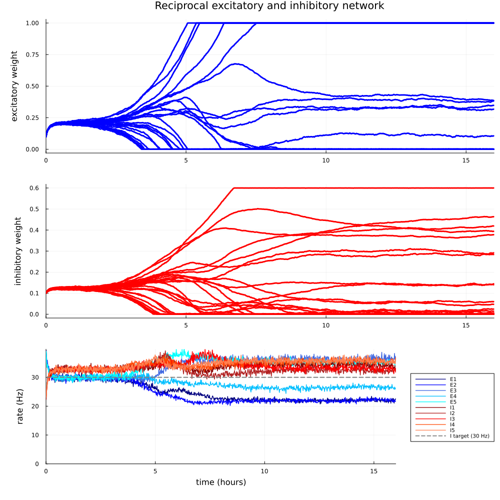
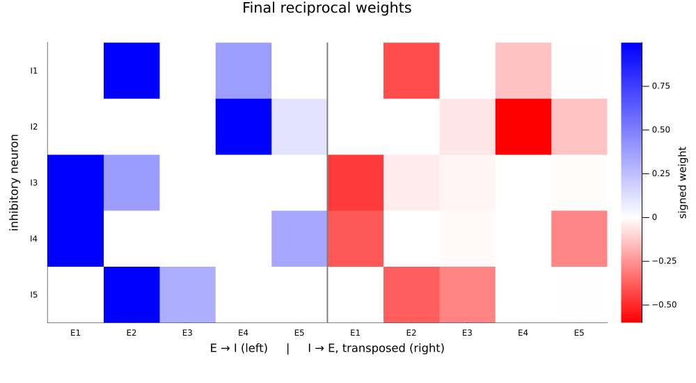

Winner-take-all self-stabilizing plasticity
Excitatory winner-take-all
Ten independent excitatory neurons fire at 50 Hz and project to one postsynaptic neuron with a target of 50 Hz. Its external drive is low (5 Hz), which means the target neuron will require strong incoming weights. There is no recurrent connectivity.
using Random
using HawkesPlasticNetworks
const H = HawkesPlasticNetworksHawkesPlasticNetworksParameters
const N = 10
const r_pre = 50.0
const r_target = 50.0
const h_post = r_target/10
const τ_syn = 30e-3
const τ_plus = 20e-3
const γ = 10.0
const τ_minus = γ*τ_plus
const A_plus = 0.2
const A_minus = 0.8
const B = A_plus-A_minus
const η = 1e-6
const αpre = -B*r_target
const αpost = 0.0
const weight_start = 0.001
const weight_min = 0.0
const weight_max = Inf
const simulation_seed = 0
const simulation_duration = 16*3600.0
const recording_interval = 60.0
const shared_weight_target = (r_target-h_post)/(N*r_pre)
const M = A_plus/(τ_syn+τ_plus)
const winner_weight = (αpre+B*h_post)/(-B*r_pre-M)
const winner_rate = h_post+r_pre*winner_weight;STDP kernel
The idea here is that the rate components push the target neuron to its prescribed rate. Once the rate is reached, however, the covariance-components start to influence plasticity and trigger competition. Competition comes from the positive loop of pre-post connections generating positive pre-post correlations, leading to stronger $\Delta W$, leading to stronger connections and so on.
\[L(\Delta t)= \begin{cases} -\dfrac{0.8}{0.2}\exp(\Delta t/0.2), & \Delta t<0,\\[4pt] \dfrac{0.2}{0.02}\exp(-\Delta t/0.02), & \Delta t>0. \end{cases}\]
Depression has a slower timescales because it does not matter so much. What is important for stability is a net negative area of the STDP and a positive $\alpha_{\text{pre}}$. Below you can see the STDP kernel (but not the alphas)
using Plots
negative_lags = range(-6τ_minus,0.0;length=1201)
positive_lags = range(0.0,6τ_minus;length=1201)
depression = @. -A_minus/τ_minus*exp(negative_lags/τ_minus)
potentiation = @. A_plus/τ_plus*exp(-positive_lags/τ_plus)
stdp_figure = plot(
1000 .* negative_lags,depression;
color=:red,fillrange=0,fillalpha=0.25,linewidth=3,label=false,
xlabel="Spike lag Δt = t_post − t_pre (ms)",
ylabel="Learning window L(Δt) (s⁻¹)",
title="Asymmetric STDP: broad depression, brief potentiation",
xlims=(-250,250),legend=false,size=(850,450),
left_margin=6Plots.mm,bottom_margin=3Plots.mm)
plot!(stdp_figure,1000 .* positive_lags,potentiation;
color=:blue,fillrange=0,fillalpha=0.25,linewidth=3,label=false)
hline!(stdp_figure,[0.0];color=:black,linewidth=1,label=false);
stdp_figure
Rate regulation and competition
With $\alpha_{\text{pre}}=-B \, r_{\mathrm{target}}=30$ and $\alpha_{\text{post}}=0$, a first-order approximation gives
\[\langle\dot w_i\rangle\approx\eta r_{\mathrm{pre}} \left[B(r_{\mathrm{post}}-r_{\mathrm{target}})+M w_i\right], \qquad M=\frac{A_+}{\tau_{\mathrm{syn}}+\tau_+}=4\,\mathrm{s}^{-1}.\]
The negative $B$ regulates total excitation. The causal term $M w_i$ favors stronger synapses, amplifying differences until weaker weights approach zero. Here $|B|r_{\mathrm{pre}}>M$, so total excitation remains stable even with a single active synapse. Note that correlations always shift the learned rate above the nominal target.
Assuming only one synapse remains, $r_{\mathrm{post}}=h+r_{\mathrm{pre}}w$. Setting its rate and causal-correlation drift to zero gives
\[0=\alpha_{\text{pre}}+Bh+(Br_{\mathrm{pre}}+M)w_*, \qquad w_* = \frac{\alpha_{\text{pre}}+Bh}{-Br_{\mathrm{pre}}-M} = \frac{27}{26}\approx1.03846.\]
This slow-learning fixed point is stable because $Br_{\mathrm{pre}}+M=-26<0$. Its predicted postsynaptic rate is $h+r_{\mathrm{pre}}w_*\approx56.92$ Hz. The rule is self-regulating: no upper weight saturation is needed, only the nonnegative lower bound.
Build the feedforward network
In post <- pre order, the plastic matrix has one row and ten columns. The presynaptic population has constant input and no incoming connections. Weights stay nonnegative with no upper cap.
function simulate_competition(;
simulation_duration::Real=simulation_duration,
recording_interval::Real=recording_interval,seed::Integer=simulation_seed)
Random.seed!(seed)
population_post = H.PopulationExpKernelExcitatory(1,τ_syn;label="post")
population_pre = H.PopulationExpKernelExcitatory(N,τ_syn;label="pre")
weights = fill(weight_start,1,N)
rule = H.PlasticityAsymmetricSTDP(
η,B,αpre,αpost,τ_plus,γ,weights;weight_min=weight_min,weight_max=weight_max)
connection = H.ConnectionWithWeights(
population_post,weights,population_pre;plasticity_rules=(rule,))
connected_post = H.ConnectedPopulationExpKernel(
population_post,[h_post],(connection,population_pre))
connected_pre = H.ConnectedPopulationExpKernel(
population_pre,fill(r_pre,N))
recorder_weights = H.WeightMatrixRecorder(
connection.weights,recording_interval,simulation_duration)
recorder_post = H.RecorderPopulationRate(
population_post,simulation_duration;Δt=recording_interval)
recorder_pre = H.RecorderPopulationRate(
population_pre,simulation_duration;Δt=recording_interval)
network = H.RecurrentNetworkExpKernel(
(connected_post,connected_pre),
(recorder_weights,recorder_post,recorder_pre))
H.reset!(network)
H.reset!(rule)
initial_weights = copy(connection.weights)
time_now = 0.0
while time_now < simulation_duration
time_now = H.dynamics_step!(time_now,network)
end
# Weight snapshots are event-triggered; keep their own time vector.
# Prepend the exact initial state rather than assigning it a spike time.
content_weights = H.get_content(recorder_weights)
content_post = H.get_content(recorder_post)
content_pre = H.get_content(recorder_pre)
return (
weight_times=vcat(0.0,content_weights.times),
weights=vcat(initial_weights,content_weights.weights[:,1,:]),
final_weights=copy(connection.weights),
rate_times=content_post.times,rates_post=content_post.rates,
rates_pre=content_pre.rates,
final_input_pre=copy(connected_pre.input),
final_input_post=copy(connected_post.input),
weight_min=rule.weight_min,weight_max=rule.weight_max)
end;Run the network and follow the ten weights
Blue curves show the ten weights; the green line marks the single-winner fixed point. The gray dashed line marks equal sharing at the nominal target: $(r_{\mathrm{target}}-h)/(Nr_{\mathrm{pre}})$. The lower panel shows the postsynaptic rate in 60-second bins, with the nominal target and the predicted single-winner rate as horizontal references.
execution_seconds = @elapsed begin
result = simulate_competition()
end
weight_figure = plot(
result.weight_times./3600,result.weights;
color=:navy,linewidth=3,label=false,legend=false,
xlabel="time (hours)",ylabel="excitatory weight",
title="Ten initially identical synapses",
size=(1000,550),left_margin=6Plots.mm,bottom_margin=4Plots.mm)
hline!(weight_figure,[winner_weight];
color=:green,linewidth=3,label=false)
hline!(weight_figure,[shared_weight_target];
color=:gray,linestyle=:dash,linewidth=2,label=false)
rate_figure = plot(result.rate_times./3600,result.rates_post;
color=:black,linewidth=1.5,label="postsynaptic rate",
xlabel="time (hours)",ylabel="rate (Hz)",ylims=(0.0,Inf),legend=false)
hline!(rate_figure,[r_target];
color=:gray,linestyle=:dash,linewidth=2,label="target (50 Hz)")
hline!(rate_figure,[winner_rate];
color=:green,linestyle=:dot,linewidth=2,label="single-winner prediction")
competition_figure = plot(weight_figure,rate_figure;
layout=grid(2,1;heights=[2/3,1/3]),link=:x,xlims=(0.0,simulation_duration/3600),
size=(1000,825),left_margin=6Plots.mm,bottom_margin=4Plots.mm);
competition_figure
Simulation execution time, excluding plotting:
Execution time: 0.3 minutes (15 seconds).Inhibitory winner-take-all
Now we do the same for inhibition. Ten independent inhibitory neurons now fire at 25 Hz, with constant external inputs and no connections from E. The target neuron receives an input matching 100 Hz, Inhibition must remove the excess activity reaching a 50 Hz target.
Parameters
const N_inhibitory = 10
const r_I = 25.0
const r_target_inhibitory = 50.0
const h_post_inhibitory = 100.0
const τ_syn_inhibitory = 30e-3
const τ_plus_inhibitory = 20e-3
const γ_inhibitory = 10.0
const τ_minus_inhibitory = γ_inhibitory*τ_plus_inhibitory
const αpost_inhibitory = 0.0
const weight_start_inhibitory = 0.001
const weight_min_inhibitory = 0.0
const weight_max_inhibitory = Inf
const simulation_seed_inhibitory = 0
const simulation_duration_inhibitory = 16*3600.0
const recording_interval_inhibitory = 60.0
const η_inhibitory = 5e-6
const B_inhibitory = 0.6
const αpre_inhibitory = -B_inhibitory*r_target_inhibitory
const A_left_inhibitory = (1+B_inhibitory)/2
const A_right_inhibitory = (1-B_inhibitory)/2
const M_inhibitory = A_right_inhibitory/(τ_syn_inhibitory+τ_plus_inhibitory)
const shared_target_inhibitory = (h_post_inhibitory-r_target_inhibitory)/(N_inhibitory*r_I);Inhibitory STDP kernel
This is pretty much the inverted version of the previous kernel. Exactly the same principles are at play, except the presynaptic neuron is inhibitory here, which requires to flip signs. In the plasticity rule inverted=true changes the timing signs while keeping B equal to the area:
\[L_I(\Delta t)= \begin{cases} \dfrac{0.8}{0.2}\exp(\Delta t/0.2), & \Delta t<0,\\[4pt] -\dfrac{0.2}{0.02}\exp(-\Delta t/0.02), & \Delta t>0. \end{cases}\]
negative_lags_inhibitory = range(-6τ_minus_inhibitory,0.0;length=1201)
positive_lags_inhibitory = range(0.0,6τ_minus_inhibitory;length=1201)
inhibitory_stdp_figure = plot(
1000 .* negative_lags_inhibitory,
A_left_inhibitory/τ_minus_inhibitory .* exp.(negative_lags_inhibitory./τ_minus_inhibitory);
color=:blue,fillrange=0,fillalpha=0.25,linewidth=3,label=false,legend=false,
xlabel="Spike lag Δt = t_post − t_pre (ms)",
ylabel="Learning window Lᵢ(Δt) (s⁻¹)",
title="Inverted STDP: broad potentiation, brief depression",
xlims=(-250,250),size=(850,450),
left_margin=6Plots.mm,bottom_margin=3Plots.mm)
plot!(inhibitory_stdp_figure,1000 .* positive_lags_inhibitory,
-A_right_inhibitory/τ_plus_inhibitory .* exp.(-positive_lags_inhibitory./τ_plus_inhibitory);
color=:red,fillrange=0,fillalpha=0.25,linewidth=3,label=false)
hline!(inhibitory_stdp_figure,[0.0];color=:black,linewidth=1,label=false);
inhibitory_stdp_figure
Regulation and competition
Stronger inhibition suppresses causal postsynaptic spikes and therefore receives less timing-dependent depression. The causal coefficient is now positive, $M_I=0.2/(\tau_{\mathrm{syn}}+\tau_+)=4\,\mathrm{s}^{-1}$:
\[\langle\dot w_i\rangle\approx\eta_I r_I \left[B(r_E-r_{\mathrm{target}})+M_Iw_i\right], \qquad r_E\approx h_E-r_I\sum_i w_i.\]
Above target inhibition strengthens; below target it weakens. No upper weight saturation is needed because the rate feedback is self-regulating.
Single-winner estimate with rate rectification
For one surviving input, retain the clipped intensity $[h_E-wx_I]_+$. Set $q=r_I\tau_{\mathrm{syn}}$, $a=\tau_{\mathrm{syn}}/\tau_+$, and $z=h_E\tau_{\mathrm{syn}}/w$. For $z<1$, averaging over the stationary Poisson-driven exponential trace gives
\[r_E(w)=Kz^q,\qquad K=\frac{h_Ee^{-\gamma_{\mathrm{Euler}}q}}{\Gamma(q+2)}, \qquad C=a\,\mathrm{Beta}(a,q+2).\]
The broad positive lobe samples the mean rate, while the short negative lobe samples the rate after an inhibitory spike. The resulting drift equation is
\[0=\alpha_{\text{pre}}+Kz^q\left[A_{\mathrm{left}}- A_{\mathrm{right}}Cz^a\right],\qquad w_*\approx3.03,\quad r_E^*\approx40.05\,\mathrm{Hz}.\]
Solve this scalar equation by bisection. This is a slow-learning estimate with one fixed synapse; it includes rate clipping but neglects losing weights and fluctuations of the winning weight.
using SpecialFunctions: gamma, beta
function inhibitory_single_winner_prediction()
q = r_I*τ_syn_inhibitory
a = τ_syn_inhibitory/τ_plus_inhibitory
K = h_post_inhibitory*exp(-Float64(Base.MathConstants.eulergamma)*q)/gamma(q+2)
C = a*beta(a,q+2)
if αpre_inhibitory >= 0.0
throw(ArgumentError("the single-winner estimate requires negative αpre"))
end
if αpre_inhibitory+K*(A_left_inhibitory-A_right_inhibitory*C) < 0.0
throw(ArgumentError("this estimate requires a fixed point with w ≥ h_E*τ_syn_inhibitory"))
end
lower = 0.0
upper = 1.0
for _ in 1:100
z = (lower+upper)/2
drift = αpre_inhibitory+K*z^q*(A_left_inhibitory-A_right_inhibitory*C*z^a)
if drift > 0.0
upper = z
else
lower = z
end
end
z = (lower+upper)/2
return (weight=h_post_inhibitory*τ_syn_inhibitory/z,rate=K*z^q)
end;Build the inhibitory feedforward network
function simulate_inhibitory_competition(;
inhibitory_rate::Real=r_I,learning_rate::Real=η_inhibitory,
simulation_duration::Real=simulation_duration_inhibitory,
recording_interval::Real=recording_interval_inhibitory,
seed::Integer=simulation_seed_inhibitory)
Random.seed!(seed)
population_e = H.PopulationExpKernelExcitatory(1,τ_syn_inhibitory;label="e")
population_i = H.PopulationExpKernelInhibitory(N_inhibitory,τ_syn_inhibitory;label="i")
weights = fill(weight_start_inhibitory,1,N_inhibitory)
rule = H.PlasticityAsymmetricSTDP(
learning_rate,B_inhibitory,αpre_inhibitory,αpost_inhibitory,τ_plus_inhibitory,γ_inhibitory,weights;
weight_min=weight_min_inhibitory,weight_max=weight_max_inhibitory,inverted=true)
connection_ei = H.ConnectionWithWeights(
population_e,weights,population_i;plasticity_rules=(rule,))
connected_e = H.ConnectedPopulationExpKernel(
population_e,[h_post_inhibitory],(connection_ei,population_i))
connected_i = H.ConnectedPopulationExpKernel(
population_i,fill(Float64(inhibitory_rate),N_inhibitory))
recorder_weights = H.WeightMatrixRecorder(
connection_ei.weights,recording_interval,simulation_duration)
recorder_e = H.RecorderPopulationRate(
population_e,simulation_duration;Δt=recording_interval)
recorder_i = H.RecorderPopulationRate(
population_i,simulation_duration;Δt=recording_interval)
network = H.RecurrentNetworkExpKernel(
(connected_e,connected_i),
(recorder_weights,recorder_e,recorder_i))
H.reset!(network)
H.reset!(rule)
initial_weights = copy(connection_ei.weights)
time_now = 0.0
while time_now < simulation_duration
time_now = H.dynamics_step!(time_now,network)
end
content_weights = H.get_content(recorder_weights)
content_e = H.get_content(recorder_e)
content_i = H.get_content(recorder_i)
return (
weight_times=vcat(0.0,content_weights.times),
weights=vcat(initial_weights,content_weights.weights[:,1,:]),
final_weights=copy(connection_ei.weights),
rate_times=content_e.times,rates_post=content_e.rates,rates_pre=content_i.rates,
final_input_pre=copy(connected_i.input),
final_input_post=copy(connected_e.input),
weight_min=rule.weight_min,weight_max=rule.weight_max)
end;Run the inhibitory network
Red curves show the ten inhibitory weights; green marks the clipping-aware single-winner estimate $w_*\approx3.03$. The gray dashed line is the nominal equal-sharing reference $(h_E-r_{\mathrm{target}})/(Nr_I)=0.2$. The lower panel shows the postsynaptic rate in 60-second bins, with the nominal target and the clipping-aware rate prediction as references.
prediction_inhibitory = inhibitory_single_winner_prediction()
execution_seconds_inhibitory = @elapsed begin
result_inhibitory = simulate_inhibitory_competition()
end
inhibitory_weight_figure = plot(
result_inhibitory.weight_times./3600,result_inhibitory.weights;
color=:red,linewidth=3,label=false,legend=false,
xlabel="time (hours)",ylabel="inhibitory weight",
title="Ten inhibitory synapses with inverted STDP",
size=(1000,550),left_margin=6Plots.mm,bottom_margin=4Plots.mm)
hline!(inhibitory_weight_figure,[prediction_inhibitory.weight];
color=:green,linewidth=3,label=false)
hline!(inhibitory_weight_figure,[shared_target_inhibitory];
color=:gray,linestyle=:dash,linewidth=2,label=false)
inhibitory_rate_figure = plot(
result_inhibitory.rate_times./3600,result_inhibitory.rates_post;
color=:black,linewidth=1.5,label="postsynaptic rate",
xlabel="time (hours)",ylabel="rate (Hz)",ylims=(0.0,Inf),legend=false)
hline!(inhibitory_rate_figure,[r_target_inhibitory];
color=:gray,linestyle=:dash,linewidth=2,label="target (50 Hz)")
hline!(inhibitory_rate_figure,[prediction_inhibitory.rate];
color=:green,linestyle=:dot,linewidth=2,label="single-winner prediction")
inhibitory_competition_figure = plot(inhibitory_weight_figure,inhibitory_rate_figure;
layout=grid(2,1;heights=[2/3,1/3]),link=:x,xlims=(0.0,simulation_duration_inhibitory/3600),
size=(1000,825),left_margin=6Plots.mm,bottom_margin=4Plots.mm);
inhibitory_competition_figure
Simulation execution time, including first-use compilation and excluding plotting:
Execution time: 0.1 minutes (8 seconds).Both excitatory and inhibitory
What happens when we try with both excitatory and inhibitory neurons? It turns out that this trick does not readily extend to multiple populations! Because competition among neurons takes place through the postsynaptic rate, excitatory and inhibitory inputs interfere with each other, potentially driving weights to saturation. Competition within each population would require a population-specific signal! Which then would be a bit like regularizing, separately, by the sum of exc input weights and the sum of inh input weights.
Here I give a negative examples. Three excitatory neurons at 50 Hz and three inhibitory neurons at 60 Hz now project to the same postsynaptic neuron. Both presynaptic populations have constant inputs and no incoming connections. The postsynaptic external drive is only 5 Hz. Excitation uses asymmetric STDP with a fixed target of 10 Hz. Inhibition uses adaptive inverted asymmetric STDP.
All parameters below belong to this mixed E/I example.
const N_e_combined = 3
const N_i_combined = 3
const r_e_combined = 50.0
const r_i_combined = 60.0
const h_post_combined = 5.0
const τ_syn_combined = 30e-3
const τ_plus_e_combined = 20e-3
const τ_plus_i_combined = 20e-3
const γ_e_combined = 10.0
const γ_i_combined = 10.0
const A_plus_e_combined = 0.2
const A_minus_e_combined = 0.8
const B_e_combined = A_plus_e_combined-A_minus_e_combined
const B_i_combined = 0.6
const η_e_combined = 5e-6
const η_i_combined = 3.3325e-5
const r_min_i_combined = 10.0
const r_max_i_combined = 30.0
const γ_calcium_i_combined = 1500.0
const r_target_e_combined = 10.0
const αpre_e_combined = -B_e_combined*r_target_e_combined
const αpost_e_combined = 0.0
const αpre_i_combined = 0.0
const αpost_i_combined = 0.0
const weight_start_combined = 0.001
const weight_min_e_combined = 0.0
const weight_min_i_combined = 0.0
const weight_max_e_combined = 10.0
const weight_max_i_combined = 10.0
const simulation_seed_combined = 0
const simulation_duration_combined = 16*3600.0
const recording_interval_combined = 60.0;Build the combined feedforward network
Each plastic matrix has shape 1 × 3, in post <- pre order. The inhibitory weights are positive magnitudes; the inhibitory population supplies their negative effect on the postsynaptic input. Each matrix gets its own rule and recorder.
function simulate_combined_competition(;
simulation_duration::Real=simulation_duration_combined,
recording_interval::Real=recording_interval_combined,seed::Integer=simulation_seed_combined)
Random.seed!(seed)
population_post = H.PopulationExpKernelExcitatory(1,τ_syn_combined;label="post")
population_e = H.PopulationExpKernelExcitatory(N_e_combined,τ_syn_combined;label="pre_e")
population_i = H.PopulationExpKernelInhibitory(N_i_combined,τ_syn_combined;label="pre_i")
weights_e = fill(weight_start_combined,1,N_e_combined)
weights_i = fill(weight_start_combined,1,N_i_combined)
rule_e = H.PlasticityAsymmetricSTDP(
η_e_combined,B_e_combined,αpre_e_combined,αpost_e_combined,
τ_plus_e_combined,γ_e_combined,weights_e;
weight_min=weight_min_e_combined,weight_max=weight_max_e_combined)
rule_i = H.PlasticityAdaptiveAsymmetric(
η_i_combined,B_i_combined,τ_plus_i_combined,γ_i_combined,γ_calcium_i_combined,weights_i;
r_min=r_min_i_combined,r_max=r_max_i_combined,αpre=αpre_i_combined,αpost=αpost_i_combined,
weight_min=weight_min_i_combined,weight_max=weight_max_i_combined,inverted=true)
connection_e = H.ConnectionWithWeights(
population_post,weights_e,population_e;plasticity_rules=(rule_e,))
connection_i = H.ConnectionWithWeights(
population_post,weights_i,population_i;plasticity_rules=(rule_i,))
connected_post = H.ConnectedPopulationExpKernel(
population_post,[h_post_combined],
(connection_e,population_e),(connection_i,population_i))
connected_e = H.ConnectedPopulationExpKernel(population_e,fill(r_e_combined,N_e_combined))
connected_i = H.ConnectedPopulationExpKernel(population_i,fill(r_i_combined,N_i_combined))
recorder_e = H.WeightMatrixRecorder(
connection_e.weights,recording_interval,simulation_duration)
recorder_i = H.WeightMatrixRecorder(
connection_i.weights,recording_interval,simulation_duration)
recorder_post = H.RecorderPopulationRate(
population_post,simulation_duration;Δt=recording_interval)
network = H.RecurrentNetworkExpKernel(
(connected_post,connected_e,connected_i),
(recorder_e,recorder_i,recorder_post))
H.reset!(network)
H.reset!(rule_e)
H.reset!(rule_i)
initial_weights_e = copy(connection_e.weights)
initial_weights_i = copy(connection_i.weights)
time_now = 0.0
while time_now < simulation_duration
time_now = H.dynamics_step!(time_now,network)
end
content_e = H.get_content(recorder_e)
content_i = H.get_content(recorder_i)
content_post = H.get_content(recorder_post)
return (
weight_times_e=vcat(0.0,content_e.times),
weight_times_i=vcat(0.0,content_i.times),
weights_e=vcat(initial_weights_e,content_e.weights[:,1,:]),
weights_i=vcat(initial_weights_i,content_i.weights[:,1,:]),
final_weights_e=copy(connection_e.weights),
final_weights_i=copy(connection_i.weights),
rate_times=content_post.times,rates_post=content_post.rates)
end;Follow all six weights
Blue curves show the three excitatory weights; red curves show the three inhibitory weight magnitudes. The lower panel shows the postsynaptic rate in 60-second bins. Red dashed lines mark the inhibitory target bounds (10 and 30 Hz); the navy dotted line marks the fixed excitatory target (10 Hz).
execution_seconds_combined = @elapsed begin
result_combined = simulate_combined_competition()
end
combined_weight_figure = plot(
result_combined.weight_times_e./3600,result_combined.weights_e;
color=:navy,linewidth=3,label=false,legend=false,
xlabel="time (hours)",ylabel="weight magnitude",
title="Both excitatory and inhibitory",
ylims=(0.0,1.05max(weight_max_e_combined,weight_max_i_combined)),
size=(1000,550),left_margin=6Plots.mm,bottom_margin=4Plots.mm)
plot!(combined_weight_figure,
result_combined.weight_times_i./3600,result_combined.weights_i;
color=:red,linewidth=3,label=false)
combined_rate_figure = plot(
result_combined.rate_times./3600,result_combined.rates_post;
color=:black,linewidth=1.5,label="postsynaptic rate",
xlabel="time (hours)",ylabel="rate (Hz)",ylims=(0.0,Inf),legend=false)
hline!(combined_rate_figure,[r_min_i_combined,r_max_i_combined];
color=:red,linestyle=:dash,linewidth=2,label="I target bounds (10–30 Hz)")
hline!(combined_rate_figure,[r_target_e_combined];
color=:navy,linestyle=:dot,linewidth=2,label="E target (10 Hz)")
combined_competition_figure = plot(combined_weight_figure,combined_rate_figure;
layout=grid(2,1;heights=[2/3,1/3]),link=:x,xlims=(0.0,simulation_duration_combined/3600),
size=(1000,825),left_margin=6Plots.mm,bottom_margin=4Plots.mm);
combined_competition_figure
Simulation execution time, including first-use compilation and excluding plotting:
Execution time: 1.8 minutes (105 seconds).Reciprocal excitatory and inhibitory network
Here I show a different strategy to trigger some competition and sparse connectivity. Five excitatory neurons and five inhibitory neurons form a reciprocal network. Each E neuron receives 50 Hz of constant external drive, and each I neuron receives 2 Hz. Every E neuron projects to every I neuron and vice versa, with no connections within either population.
Reciprocal network parameters
const N_e_reciprocal = 5
const N_i_reciprocal = 5
const h_e_reciprocal = 50.0
const h_i_reciprocal = 2.0
const τ_syn_reciprocal = 30e-3
const τ_plus_e_reciprocal = 60e-3
const τ_plus_i_reciprocal = 60e-3
const γ_e_reciprocal = 1.0
const γ_i_reciprocal = 20.0
const B_e_reciprocal = -0.6
const B_i_reciprocal = 0.0
const r_target_i_reciprocal = 30.0
const αpre_e_reciprocal = -B_e_reciprocal*r_target_i_reciprocal
const αpost_e_reciprocal = 0.0
const αpre_i_reciprocal = -1.0
const αpost_i_reciprocal = 1.0
const η_e_reciprocal = 1.775556e-6
const η_i_reciprocal = 2.95630074e-6
const weight_start_e_reciprocal = 0.1
const weight_start_i_reciprocal = 0.1
const weight_min_reciprocal = 0.0
const weight_max_e_reciprocal = 1.0
const weight_max_i_reciprocal = 0.6
const simulation_seed_reciprocal = 0
const simulation_duration_reciprocal = 16*3600.0
const recording_interval_reciprocal = 60.0;Plasticity and reciprocal connections
E → I uses the first example's asymmetric rule, with negative integrated bias $B=-0.6$ and $\alpha_{\text{pre}}=18$. Its mean rate contribution is proportional to $r_E[18-0.6r_I]$, giving a nominal inhibitory target of 30 Hz. With $\gamma_E=1$, causal pairs potentiate and reverse-order pairs depress with the same 60 ms timescale.
I → E uses symmetric STDP with balanced positive and negative areas ($B=0$), $\alpha_{\text{pre}}=-1$, $\alpha_{\text{post}}=1$, and 1.665 times the excitatory learning rate. Both spike orders potentiate at short lags (60 ms positive traces) and depress at longer lags (1.2 s negative traces). It has no explicit rate target.
In post <- pre order, weights_ie (I ← E) has shape 5 × 5, and weights_ei (E ← I) has shape 5 × 5.
Rates are recorded separately for each neuron in complete 60-second bins.
struct NeuronRateRecorder <: H.AbstractRecorder
population_label::Symbol
interval::Float64
rates::Matrix{Float64}
end
function H.reset!(recorder::NeuronRateRecorder)
fill!(recorder.rates,0.0)
return nothing
end
function H.record_stuff!(recorder::NeuronRateRecorder,time::Real,
population_index::Integer,population_label::Symbol,neuron_index::Integer)
if population_label == recorder.population_label
if 0.0 <= time < size(recorder.rates,1)*recorder.interval
bin = floor(Int,time/recorder.interval)+1
recorder.rates[bin,neuron_index] += 1/recorder.interval
end
end
return nothing
end;
function simulate_reciprocal_competition(;
duration::Real=simulation_duration_reciprocal,interval::Real=recording_interval_reciprocal,
seed::Integer=simulation_seed_reciprocal)
Random.seed!(seed)
population_e = H.PopulationExpKernelExcitatory(N_e_reciprocal,τ_syn_reciprocal;label="e")
population_i = H.PopulationExpKernelInhibitory(N_i_reciprocal,τ_syn_reciprocal;label="i")
weights_ie = fill(weight_start_e_reciprocal,N_i_reciprocal,N_e_reciprocal)
weights_ei = fill(weight_start_i_reciprocal,N_e_reciprocal,N_i_reciprocal)
rule_e = H.PlasticityAsymmetricSTDP(
η_e_reciprocal,B_e_reciprocal,αpre_e_reciprocal,αpost_e_reciprocal,τ_plus_e_reciprocal,γ_e_reciprocal,weights_ie;
weight_min=weight_min_reciprocal,weight_max=weight_max_e_reciprocal)
rule_i = H.PlasticitySymmetricSTDP(
η_i_reciprocal,B_i_reciprocal,αpre_i_reciprocal,αpost_i_reciprocal,τ_plus_i_reciprocal,γ_i_reciprocal,weights_ei;
weight_min=weight_min_reciprocal,weight_max=weight_max_i_reciprocal)
connection_ie = H.ConnectionWithWeights(
population_i,weights_ie,population_e;plasticity_rules=(rule_e,))
connection_ei = H.ConnectionWithWeights(
population_e,weights_ei,population_i;plasticity_rules=(rule_i,))
connected_e = H.ConnectedPopulationExpKernel(
population_e,fill(h_e_reciprocal,N_e_reciprocal),(connection_ei,population_i))
connected_i = H.ConnectedPopulationExpKernel(
population_i,fill(h_i_reciprocal,N_i_reciprocal),(connection_ie,population_e))
recorder_ie = H.WeightMatrixRecorder(connection_ie.weights,interval,duration)
recorder_ei = H.WeightMatrixRecorder(connection_ei.weights,interval,duration)
n_bins = floor(Int,duration/interval)
recorder_e = NeuronRateRecorder(population_e.label,Float64(interval),zeros(n_bins,N_e_reciprocal))
recorder_i = NeuronRateRecorder(population_i.label,Float64(interval),zeros(n_bins,N_i_reciprocal))
network = H.RecurrentNetworkExpKernel(
(connected_e,connected_i),(recorder_ie,recorder_ei,recorder_e,recorder_i))
H.reset!(network)
H.reset!(rule_e)
H.reset!(rule_i)
initial_ie = copy(connection_ie.weights)
initial_ei = copy(connection_ei.weights)
time_now = 0.0
while time_now < duration
time_now = H.dynamics_step!(time_now,network)
end
content_ie = H.get_content(recorder_ie)
content_ei = H.get_content(recorder_ei)
rate_times = ((1:n_bins) .- 0.5).*interval
return (
times_ie=vcat(0.0,content_ie.times),
times_ei=vcat(0.0,content_ei.times),
weights_ie=cat(reshape(initial_ie,1,N_i_reciprocal,N_e_reciprocal),content_ie.weights;dims=1),
weights_ei=cat(reshape(initial_ei,1,N_e_reciprocal,N_i_reciprocal),content_ei.weights;dims=1),
final_ie=copy(connection_ie.weights),final_ei=copy(connection_ei.weights),
rate_times_e=rate_times,rates_e=copy(recorder_e.rates),
rate_times_i=rate_times,rates_i=copy(recorder_i.rates))
end;Run the sixteen-hour reciprocal experiment
execution_seconds_reciprocal = @elapsed begin
result_reciprocal = simulate_reciprocal_competition()
end;Weights and individual firing rates
The top panel shows all 25 excitatory weights in blue; the middle panel shows all 25 inhibitory weight magnitudes in red. The bottom panel shows each neuron’s firing rate in 60-second bins, with a dashed line marking the nominal 30 Hz target for inhibitory firing.
excitatory_weight_figure_reciprocal = plot(
result_reciprocal.times_ie./3600,reshape(result_reciprocal.weights_ie,length(result_reciprocal.times_ie),:);
color=:blue,linewidth=3,label=false,legend=false,
ylabel="excitatory weight",title="Reciprocal excitatory and inhibitory network")
inhibitory_weight_figure_reciprocal = plot(
result_reciprocal.times_ei./3600,reshape(result_reciprocal.weights_ei,length(result_reciprocal.times_ei),:);
color=:red,linewidth=3,label=false,legend=false,ylabel="inhibitory weight")
exc_rate_colors_reciprocal = permutedims([:navy,:blue,:royalblue,:deepskyblue,:aqua])
inh_rate_colors_reciprocal = permutedims([:darkred,:firebrick,:red,:orangered,:coral])
rate_figure_reciprocal = plot(result_reciprocal.rate_times_e./3600,result_reciprocal.rates_e;
color=exc_rate_colors_reciprocal,label=permutedims(["E$(j)" for j in 1:N_e_reciprocal]),
ylabel="rate (Hz)",linewidth=1.5,
xlabel="time (hours)",ylims=(0.0,Inf))
plot!(rate_figure_reciprocal,result_reciprocal.rate_times_i./3600,result_reciprocal.rates_i;
color=inh_rate_colors_reciprocal,label=permutedims(["I$(j)" for j in 1:N_i_reciprocal]),linewidth=1.5)
hline!(rate_figure_reciprocal,[r_target_i_reciprocal];
color=:gray,linestyle=:dash,linewidth=2,label="I target (30 Hz)",
legend=:outerright,legendfontsize=7)
competition_figure_reciprocal = plot(excitatory_weight_figure_reciprocal,inhibitory_weight_figure_reciprocal,rate_figure_reciprocal;
layout=grid(3,1;heights=[0.35,0.35,0.30]),link=:x,
xlims=(0.0,simulation_duration_reciprocal/3600),size=(1000,1000),
left_margin=6Plots.mm,bottom_margin=4Plots.mm);
competition_figure_reciprocal
Simulation execution time, including first-use compilation and excluding plotting:
Execution time: 0.3 minutes (18 seconds).Final reciprocal connection matrices
Left: E → I in post <- pre order. Right: I → E, transposed and multiplied by -1. Thus both halves have inhibitory neurons on rows and excitatory neurons on columns, so corresponding neuron pairs line up. The gray line separates the two directions. Red indicates inhibition, white zero, and blue excitation.
signed_weights_reciprocal = hcat(result_reciprocal.final_ie,-permutedims(result_reciprocal.final_ei))
color_min_reciprocal,color_max_reciprocal = extrema(signed_weights_reciprocal)
zero_position_reciprocal = -color_min_reciprocal/(color_max_reciprocal-color_min_reciprocal)
weight_colors_reciprocal = cgrad([:red,:white,:blue],[0.0,zero_position_reciprocal,1.0])
connection_matrix_figure_reciprocal = heatmap(
1:2N_e_reciprocal,1:N_i_reciprocal,signed_weights_reciprocal;
color=weight_colors_reciprocal,clims=(color_min_reciprocal,color_max_reciprocal),
colorbar_title="signed weight",colorbar_ticks=[color_min_reciprocal,0.0,color_max_reciprocal],
xticks=(1:2N_e_reciprocal,vcat(["E$(j)" for j in 1:N_e_reciprocal],["E$(j)" for j in 1:N_e_reciprocal])),
yticks=(1:N_i_reciprocal,["I$(i)" for i in 1:N_i_reciprocal]),
yflip=true,aspect_ratio=:equal,xlims=(0.5,2N_e_reciprocal+0.5),ylims=(0.5,N_i_reciprocal+0.5),
xlabel="E → I (left) | I → E, transposed (right)",
ylabel="inhibitory neuron",title="Final reciprocal weights",
size=(1000,550),left_margin=6Plots.mm,bottom_margin=4Plots.mm)
vline!(connection_matrix_figure_reciprocal,[N_e_reciprocal+0.5];color=:gray,linewidth=2,label=false);
connection_matrix_figure_reciprocal
What this experiment shows
The explicit rate objective and winner-take-all competition act on E → I connections: excitatory inputs compete to drive each inhibitory neuron toward its nominal 30 Hz target. I → E weights instead respond to spike correlations through a symmetric pairwise window with balanced positive and negative areas ($B=0$). The pairwise window has no net bias for independent Poisson firing, but the full rule here also includes $\alpha_{\text{pre}}=-1$ and $\alpha_{\text{post}}=1$.
The intuition is that an E → I connection makes an excitatory spike more likely to be followed by an inhibitory spike. Viewed from the reciprocal I → E synapse, this is a positive correlation at negative pre–post lag: the postsynaptic E spike precedes the presynaptic I spike. Short-lag positive correlations potentiate the symmetric inhibitory rule. Stronger inhibition can then suppress E spikes after an I spike, producing a negative correlation at positive lag that can oppose that potentiation.
A negative $\alpha_{\text{pre}}$ can offset potentiation and help avoid excessive inhibition. Here the positive $\alpha_{\text{post}}$ also contributes: for independent firing, the alpha drift is $η_i(r_E-r_I)$ for each I → E synapse.
The remaining limitation is that excitatory competition does not enforce distinct choices across inhibitory neurons. Several I neurons can select the same E neuron as their strongest excitatory input, while other E neurons may end up with no appreciable outgoing connection to I. Competition within each I neuron's inputs therefore does not ensure coverage of the E population. How to encourage different inhibitory neurons to select different excitatory partners remains an open question in this example.
This page was generated using Literate.jl.